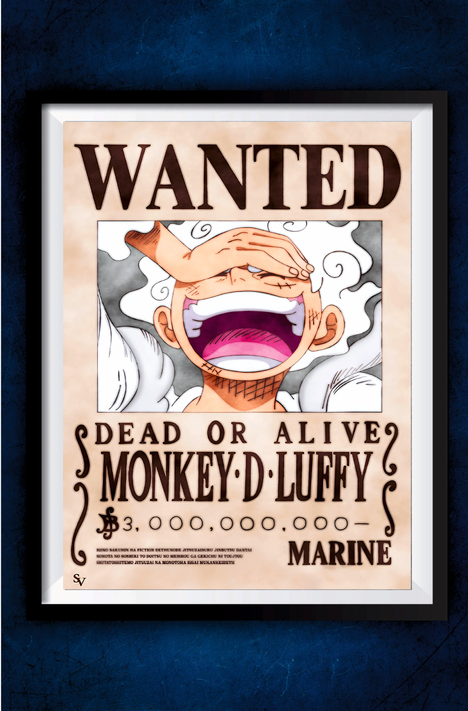
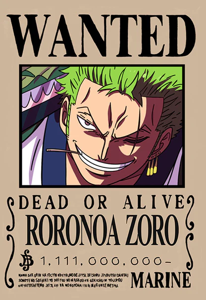

Monkey D. Luffy is the main protagonist of the popular manga and anime series One Piece, created by Eiichiro Oda. Known as "Straw Hat Luffy," he is a pirate captain whose ultimate goal is to find the legendary treasure called "One Piece" and become the King of the Pirates, which he believes means having the most freedom in the world.

Role: The combatant and right-hand man of Captain Monkey D. Luffy. Combat Style: He is famous for his Santoryu (Three Sword Style), where he wields two swords in his hands and a third in his mouth. Dream: To become the World's Greatest Swordsman to fulfill a childhood promise to his late friend, Kuina. Key Traits: An incredibly poor sense of direction (a recurring gag) and unwavering loyalty to his crew.

Sanji is a major fictional character from the anime and manga series One Piece, serving as the cook for the Straw Hat Pirates and one of the crew's top fighters. Known by his epithet "Black Leg", he has a distinctive fighting style that only uses his legs.